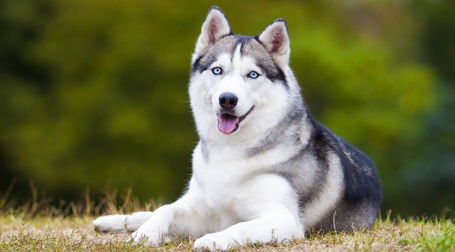

Siberian Husky
The Siberian Husky is a beautiful dog breed with a thick coat that comes in a multitude of colors and markings. Their blue or multi-colored eyes and striking facial masks only add to the appeal of this breed, which originated in Siberia.
They’re intelligent and capable working dogs. Their devotion and courage are unmatched. And they’re amazingly versatile, excelling at most anything they’re trained to do: guide and assistance work for the handicapped, police and military service, herding, search and rescue, drug detection, competitive obedience, and–last but not least–faithful companion.
They are known as the clowns of the canine world because they have a great sense of humor and like to show off. Originally bred to be a lap dogs .They thrive on human comapanionship